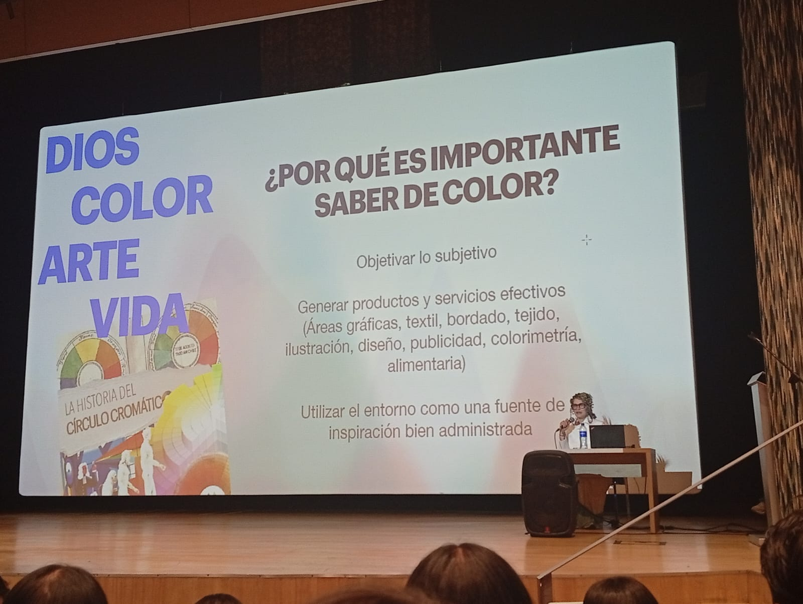
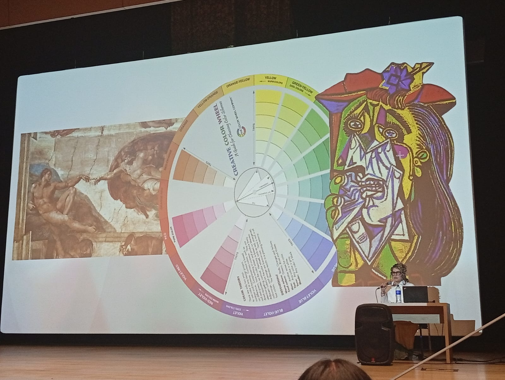
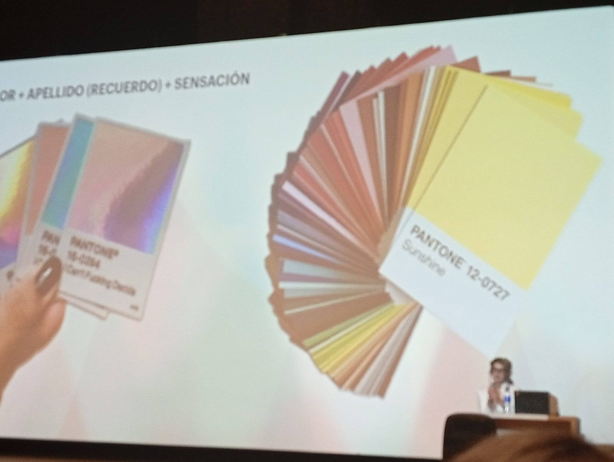
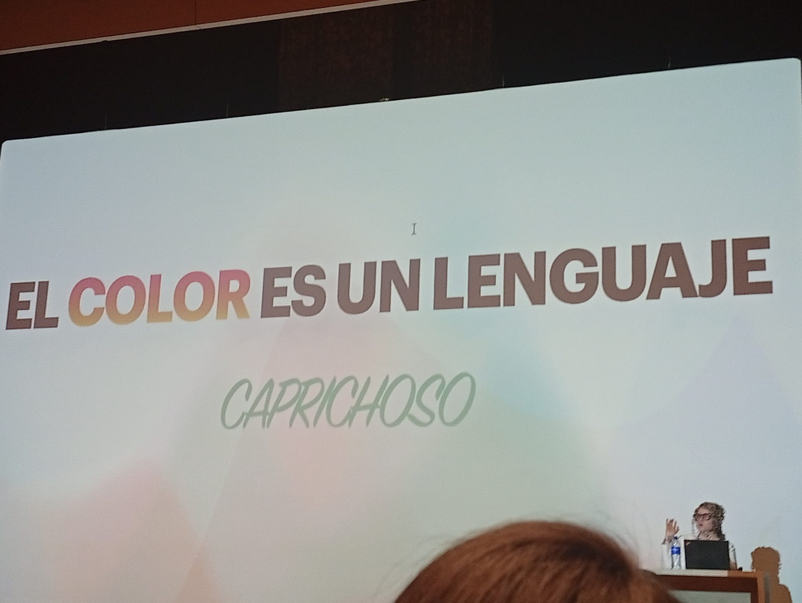
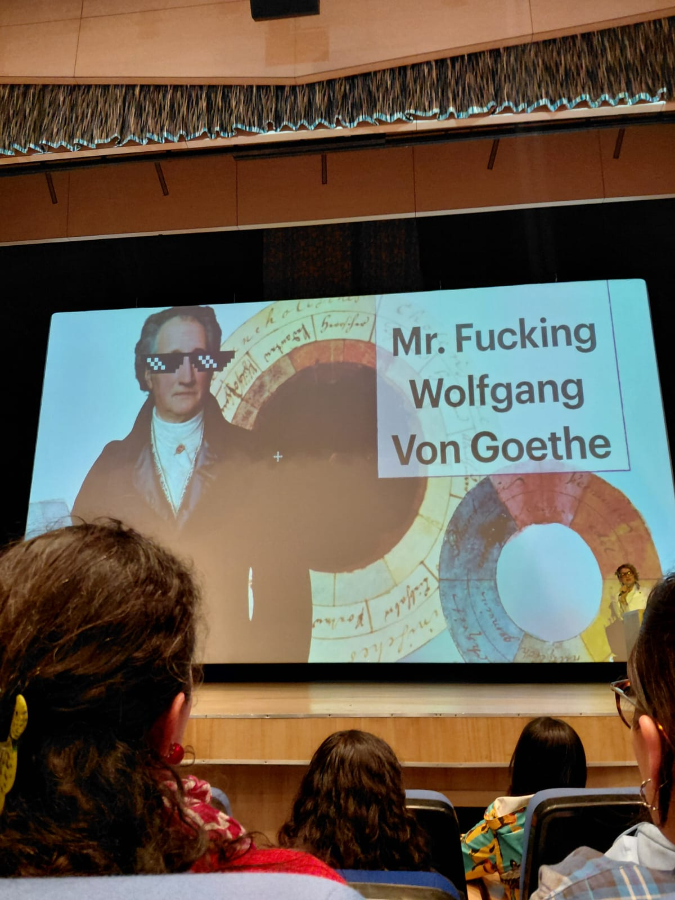
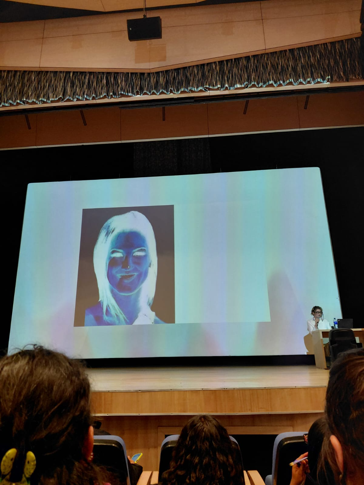
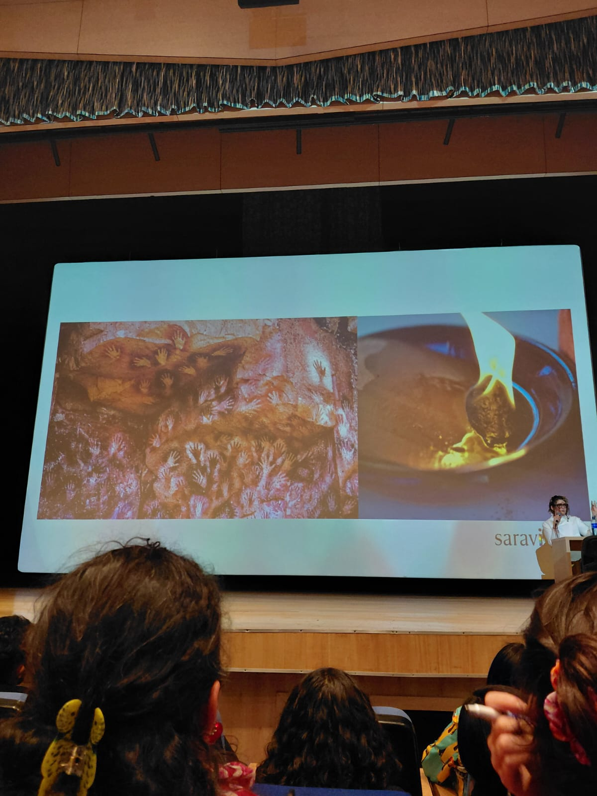
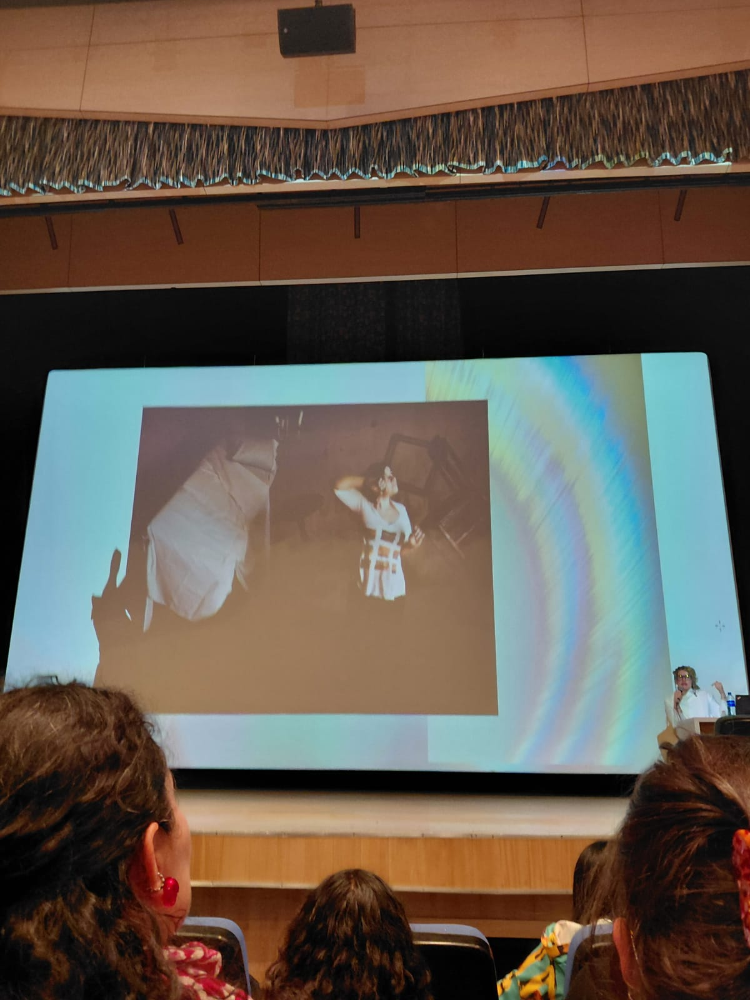

Resumen: Moda & UX
Análisis de la conferencia de Sara Viloria.
Los colores son vida. La vida está llena de cosas para ver, vivir, analizar, buscar, entender, comprender, y muchas, pero muchisimas cosas mas. Nuestros ojos recibieron el regalo de poder apreciar un espectro bastante generoso de colores a comparación de otras especies, (si no estoy mal :p). Con la presentación de Sara Viloria en la universidad ECCI, solo me queda claro que hay nerds como yo que ven los colores como algo mas que solo colores, algo que puede decir muchas cosas de una forma tan simple como estar presentes en algo. Igual que ver el color morado en prendas o joyeria de la época medieval. Me inspira una elegancia y lujosidad que no puedo expresar. Espero que se entienda el mensaje c:
Summary: Fashion & UX
Analysis of Sara Viloria's conference.
Colors are life. And life is full of things to see, live, think about, navigate, understand, comprehend, and a TON of more things to do. Our eyes received the blessing of being able to see a generous amount of colors, compared to other species, (if I'm not wrong). Upon Sara Viloria's presentation in the ECCI University, it leaves me satisfied that there are nerds out there like me that see colors like something else more than just that, something that can tell a lot of things in such a simple way as being present in it. Same as seeing the purple color in cloth and jewelry of the medieval times. It inspires something in me that I can't express enough with just words. I hope this can be understood.
Registro Visual
/ 01 MULTIMEDIA









Data
Dictionary.
/ GLOSSARY
20 palabritas aprendidas o relacionadas al tema expuesto en la universidad//Twenty words that I consider they are related to what Sara said during her presentation about color theory and subjectivity.
Estudio de cómo los colores generan percepción visual, fundamental para diseñar jerarquías en FrontEnd.
Sistema estandarizado de identificación del color, vital para mantener la identidad gráfica idéntica entre diseño web y producción física.
Estudio de los signos en la vida social. En UX, dicta cómo un usuario interpreta iconos y colores sin leer el texto.
Medida de la diferencia de luminosidad entre el texto y el fondo. Es un pilar crítico para la accesibilidad web (WCAG).
Cómo interactúa y se siente una persona al usar un producto digital. El color influye directamente en esta percepción.
Los elementos visuales e interactivos de un producto de software, como botones, menús, tipografías y paletas de color.
Sistema alfanumérico de 6 dígitos utilizado en HTML y CSS para definir colores precisos en pantallas digitales.
Práctica de desarrollar aplicaciones web que puedan ser utilizadas por todas las personas, independientemente de sus discapacidades visuales o motoras.
El arte y la técnica de organizar el texto. Al igual que el color, comunica tono y jerarquía visual en una interfaz.
Conjunto de colores seleccionados intencionalmente para ser usados en un diseño y mantener la consistencia de la marca.
La propiedad fundamental de la luz por la cual el color se clasifica (por ejemplo, rojo, verde, azul) sin importar su brillo o saturación.
La intensidad o pureza de un color; define qué tan vibrante o apagado/grisáceo se percibe en la pantalla.
Estudio de cómo los colores alteran el estado de ánimo, el comportamiento y las decisiones de un usuario al navegar.
Elemento interactivo (usualmente un botón con alto contraste de color) diseñado para incitar al usuario a realizar una tarea clave.
Guía visual básica en blanco y negro que representa la estructura esquelética de una web antes de aplicar color y diseño.
El espacio vacío intencional alrededor y entre los elementos de un diseño, esencial para reducir la carga cognitiva y mejorar la lectura.
Estructura matemática que permite alinear elementos visuales y texto de forma ordenada y proporcional en la pantalla.
Enfoque de desarrollo que utiliza CSS para asegurar que la interfaz visual y estructural se adapte a cualquier tamaño de pantalla.
Modelo estático de alta fidelidad que muestra exactamente cómo se verá el producto final, incluyendo colores, tipografía y contenido real.
El modelo de color aditivo (Red, Green, Blue) estándar para el diseño de interfaces digitales y visualización en pantallas.
Sostenibilidad &
Código Circular.
/ RESPONSABILIDAD ORGANIZACIONAL
La tecnología y la moda comparten una responsabilidad ética: reducir el impacto ambiental mediante la optimización de recursos y la extensión del ciclo de vida de los materiales y el código.
Optimización
/ CERO RESIDUOS
En el desarrollo FrontEnd, la sostenibilidad se traduce en la "minificación" de archivos y la eliminación de código muerto. Menos peso digital significa menor consumo energético en los servidores, emulando la reducción de desperdicios en la industria textil.
Reutilización
/ CÓDIGO CIRCULAR
Adoptar metodologías de diseño modular, como los componentes en Bootstrap, permite reciclar patrones de interfaz en múltiples proyectos. Es nuestra versión digital del upcycling: transformar recursos existentes en soluciones de alto valor.
Impacto
/ WEB ECOLÓGICA
Diseñar con conciencia ambiental implica considerar el modo oscuro (ahorro de batería en pantallas OLED), evitar la carga masiva de imágenes pesadas y elegir arquitecturas web eficientes que respeten los recursos del usuario final.